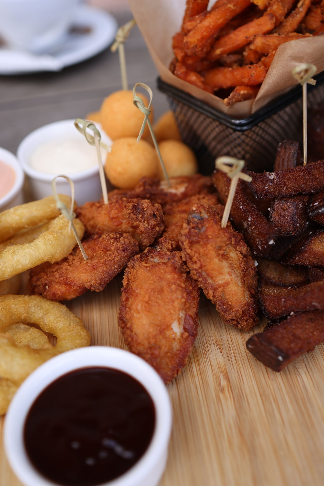
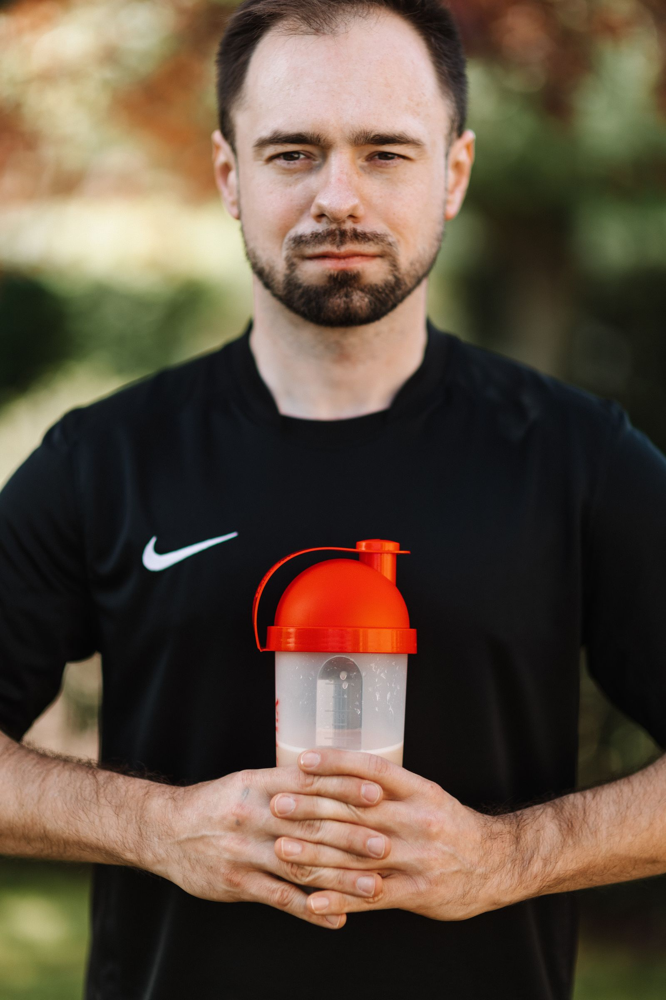

Industry · CPG / FMCG / Retail
CPG and FMCG strategy consulting.
From new product launch to national scale-up and portfolio optimisation – primary-research-led strategy across India, Gulf, Southeast Asia, and Africa.
CPG / FMCG / Retail in 2026.
The Indian FMCG market in 2026 is a tale of two channels: modern trade and quick commerce are growing at 25–40%, while traditional distribution networks are consolidating. Indian FMCG brands that built their business on kirana store relationships are urgently building D2C and quick-commerce capabilities.
In the GCC, international FMCG brands are navigating Vision 2030-driven localisation requirements and a retail landscape that shifted dramatically post-pandemic toward premium and health-conscious consumption. Saudi Arabia's retail sector is the fastest-growing in the GCC and the most complex to enter – distribution partnerships are non-negotiable and highly specific.
We've done 30+ consumer mandates in these markets. Our most cited: a performance food company that achieved 2x sales acceleration in KSA within 6 months, driven by ICP validation from 30+ consumer interviews and two strategic distribution partnerships we signed on their behalf.
Performance food in KSA. 2x sales acceleration.
A performance food brand needed to accelerate KSA sales. We validated the ICP through 30+ consumer interviews, identified and signed two strategic distribution partnerships, and ran the first 90 days of GTM execution. 2x sales growth in 6 months.
Read case study →2x
Sales growth
40+
Consumer interviews
2
Distribution partnerships signed
6mo
To result
Sector signals – 2026
$600B+
India consumer market – fastest-growing in Asia
25–40%
YoY growth in Indian modern trade and quick commerce
8%
annual growth in GCC retail market driven by Vision 2030
30+
consumer mandates delivered across India, GCC, and Southeast Asia
The CPG / FMCG growth challenge we solve.
Problem
Fragmented distribution and reactive sales growth
Structured GTM architecture with channel-specific distribution roadmap, numeric and weighted expansion targets, and clear geo prioritisation framework.
Problem
Volume growth without profit clarity
Portfolio rationalisation by margin and velocity. SKU contribution analysis. Price-pack architecture optimised for distributor ROI and consumer willingness to pay.
Problem
Strategy decks without field adoption
Field-ready execution playbooks. Sales KPI and incentive redesign. Distributor economics rebuilt. Primary-to-secondary conversion tracked and improved.
How GreyRadius helps with new product launch and growth planning.
A five-step structured approach from market ambiguity to field-ready commercial execution.
01 Opportunity assessment +
Turning market ambiguity into a Go / No-Go decision. We conduct a structured Go/No-Go evaluation covering:
- Target market assessment: category TAM, addressable retail universe, channel potential, geographic attractiveness (urban, semi-urban, rural, export)
- Current market and competitive landscape: national and local competitor mapping, price-pack benchmarking, whitespace identification, entry barriers, retailer loyalty
- Consumer and trade adoption readiness: purchase drivers, switching behaviour, retailer and distributor appetite, price sensitivity
- Product and commercial readiness: product-market fit validation, SKU relevance, pricing and trade margin viability, regulatory and labelling compliance
Outputs: Clear Go / No-Go recommendation, validated price-pack architecture, working capital visibility, risk mitigation roadmap.
02 Opportunity prioritisation +
Identifying high-impact, margin-accretive growth levers. We score and rank every growth opportunity on:
- Revenue upside potential
- Contribution margin impact
- Distribution scalability
- Trade complexity
- Working capital intensity
We then build an opportunity heat map: Gold Mine (high impact, high feasibility), Quick Wins (immediate), Major Bets (high impact, investment required), and Moonshots (long-term).
Output: Prioritised initiative list with phased execution roadmap, financial viability per initiative, and decision lens scoring.
03 Competitive intelligence +
Defining your right to win in a crowded category. Our competitive intelligence covers:
- Competitor universe mapping: national, regional, local, and emerging challenger brands; private labels; distributor-led competition
- Competitive sales and distribution strategy: channel focus, distribution structure, retail penetration, trade margin and scheme structures, sales force model
- Marketing and brand positioning intelligence: brand value proposition, price-pack architecture, ATL/BTL mix, digital and influencer footprint, in-store visibility
- Whitespace identification: portfolio gaps, price laddering opportunities, under-served geographies, consumer segments lacking strong positioning
We interview: competitor distributors, super-stockist partners, GT and MT retailers, former sales managers of competing brands, competitor marketing professionals, modern trade category managers.
04 Customer intelligence +
Purchase drivers, retail dynamics, and shopper journey. We map:
- Consumer segments: urban, rural, premium, value-seeking
- Customer journey across channels: GT, MT, e-commerce, quick commerce
- Decision triggers: price, packaging, brand recall, retailer recommendation, visibility
- Consumer pain points: price sensitivity, quality perception, packaging usability, brand trust
- Retailer and distributor expectations: margin structure, scheme support, inventory turns, credit terms
- Friction points: availability gaps, visibility issues, retailer push bias
Primary research methods: CATI interviews with distributors and retailers, mystery shopping, retail audits, shelf-share mapping, beat mapping, consumer intercept surveys.
05 Market entry and launch roadmap +
Identifying, evaluating, and prioritising the right markets, categories, and SKUs for launch. Our roadmap covers three phases:
- Phase 1 – Identify: opportunity identification, market landscape analysis (push forces and pull forces), total addressable market mapping (TAM, SAM, SOM)
- Phase 2 – Evaluate: attractiveness map (Gold Mine, Quick Win, Moon Shot, Questionable), SKU and category scoring by impact versus feasibility, phased implementation by timeline and capability readiness
- Phase 3 – Prioritise and build: Agile Focus Dartboard (Pursue Now, Keep Open, Place in Storage), priority geographies and channel mix, core versus adjacent category plays, revenue and margin potential decision lens
Output: Launch-ready market blueprint with defined GTM and distribution model, target retailer universe, SKU and margin alignment, revenue projection framework, and execution-ready launch foundation.
Grounded in on-ground primary intelligence.
Primary research capabilities built for FMCG distribution, trade, and consumer ecosystems.
In-house trade and channel intelligence team
We operate a bilingual primary calling team conducting structured CATI interviews across distributors, super-stockists, GT and MT retailers, modern trade category managers, e-commerce sellers, and industry experts. We capture: secondary sales realities, trade scheme effectiveness, margin expectations, channel conflict signals, expansion readiness.
In-house retail and market immersion team
Field research specialists conduct structured on-ground assessments: retail audits, shelf-share mapping, numeric and weighted distribution validation, mystery shopping, trade scheme validation, distributor satisfaction studies, beat mapping, territory analysis, geo-level demand assessment. Ensures strategy is validated at the point of sale, not just in the boardroom.
Survey design and strategic advisory integration
Every study aligns to commercial objectives, answers revenue-critical questions, translates insights into GTM decisions, and feeds directly into execution playbooks. Study types: expert and industry interviews, distributor and retailer surveys, consumer behaviour and purchase driver analysis, trade satisfaction and ROI studies, descriptive and diagnostic market studies.
Solutions aligned to where you are.
We calibrate every engagement to your product maturity and channel stage. No single-size playbooks.
Stage I
Entry and early scale
A. Category and opportunity validation
Category attractiveness, price-pack architecture validation, competitive intensity mapping, consumer need gap, channel feasibility (GT / MT / E-com).
B. Distribution model design
Territory and beat planning, SKU and margin viability, trade margin benchmarking, working capital modelling, sales incentive structure.
C. Go-to-market roll-out
Sales force setup and KPI governance, trade schemes and launch programmes, channel partner onboarding, primary vs secondary sales alignment, business planning (revenue, P&L, cash flow).
Stage II
Acceleration and regional leadership
A. Growth gap diagnostics
Numeric and weighted distribution gap analysis, sales productivity benchmarking, channel conflict analysis, SKU contribution margin review, win-loss analysis by region and channel.
B. Topline acceleration and channel optimisation
GTM redesign, new geography prioritisation, modern trade and e-commerce expansion, trade scheme optimisation, sales force productivity, pricing and pack-size rationalisation.
C. Structured capital and scale enablement
Growth capital readiness, business valuation, investor pitch structuring for FMCG scale.
Stage III
National and multi-category scale
A. Category adjacency identification
Rural market penetration, export and international entry roadmap, channel diversification, customer experience and brand reinforcement.
B. PE readiness and valuation enhancement
M&A opportunity screening, joint ventures and strategic alliances.
C. Acquisition target scouting
Synergy modelling (distribution and sourcing), post-merger integration governance, portfolio rationalisation post-acquisition.
What we hear on the ground.
Every mandate runs 30+ expert interviews and 200+ consumer and trade surveys. Here are the patterns we validate in every CPG engagement.
“
Secondary sales are strong in modern trade but we have zero visibility into what actually moves off the shelf in general trade. Our distributor data is primary billing only.
“
The price gap between our premium SKU and the regional competitor is 18%. Retailers push the competitor because the trade margin is 6 points higher. The consumer never even gets to choose.
“
We have launched in UAE but our Arabic labelling is non-compliant with ESMA standards. Our entire shipment is stuck at Dubai Customs.
“
Health-conscious consumers in urban markets are willing to pay 25–30% premium but they cannot find us in modern trade. Our distribution is GT-heavy in areas where our consumer does not shop.
600+ distributor, retailer, and consumer interviews conducted across CPG mandates in India and Gulf.
Read how we conduct research →CPG and FMCG mandates – selected work.
New product launch – daily dairy brand
300+ interviews and surveys conducted. 20% increase in retail outlet coverage in UAE. Profitable international expansion within Year 1.

Strategic growth and expansion – ethnic snacks brand
600+ interviews and surveys. 3% market share increase (9% to 12%). 5+ new SKUs introduced. 6 months to new product range.
Market expansion – chilli powder and seasoning brand
560+ interviews and surveys. Distribution expanded across 3 new UAE Emirates. 18% increase in weighted modern trade distribution.

MENA market entry – European protein powder brand
840+ interviews and surveys. USD 8M yearly sales without marketing spend. 12 months to market entry in UAE and KSA. 2 new channels: digital-first and select distributor hybrid.
Common questions on CPG and FMCG consulting.
What does a GreyRadius CPG engagement typically cover?+
Every engagement starts with primary research – distributor interviews, consumer intercepts, retailer audits, and competitor channel mapping. We then build the opportunity assessment, distribution model, GTM roadmap, or PE-ready strategy depending on your growth stage. Fixed fee. Output-defined. No hourly billing.
How many interviews do you conduct in a CPG mandate?+
Typically 30 to 100 primary interviews with distributors, retailers, consumers, and industry experts, combined with 200 to 500 end-user surveys. For full market entry mandates in new geographies, we go higher – our Myanmar and UAE expansion mandate ran 560+ total research touchpoints.
Can GreyRadius help with both India domestic expansion and international CPG market entry?+
Both. Our India practice covers GT and MT distribution model design, regional expansion, and Q-commerce strategy. Our Gulf and Southeast Asia practice covers export entry, Halal certification advisory, Arabic labelling compliance, distributor identification, and HORECA channel entry.
Do you work with early-stage brands or only established CPG companies?+
Both. We work with brands at Stage I (new product launch, distribution model design) through Stage III (PE readiness, M&A scouting, acquisition integration). Our engagement framework is calibrated to where you are.
How long does a CPG market entry or growth mandate take?+
Opportunity assessment with primary research: 3 to 4 weeks. Full market entry with distribution model and GTM roadmap: 8 to 10 weeks. GTM Execution-as-a-Service where we run the first 90 days of launch: 3 months ongoing.
Challenges we solve in CPG / FMCG / Retail.
GCC distributor landscape
The right distributor partner determines your retail fate in KSA and UAE. The wrong one takes 18 months to unwind, burns marketing budget, and leaves shelf space to a faster-moving competitor.
Quick commerce vs. traditional channel strategy
Indian FMCG brands face a bifurcated reality: modern trade and quick commerce are growing at 25–40%, while traditional kirana networks are consolidating. Building both simultaneously without a prioritised ICP is expensive.
Consumer insight in culturally complex markets
What your product means in KSA is different from UAE, and different again from India. Category perception, purchase triggers, and channel preference require primary consumer research – not assumptions from home market data.
Private label vs. international brand strategy
GCC retailers are aggressively expanding private label in categories from food to personal care. International brands need a clear differentiation strategy that justifies shelf price and sustains repeat purchase.
D2C unit economics across geographies
D2C economics that work in India often don't translate to GCC without market-specific pricing models, fulfilment infrastructure assessment, and channel mix recalibration for a higher-cost market.
Market entry sequencing
Which GCC country first, which channel first, and which SKU range first – these sequencing decisions determine your overall burn rate and time-to-profitability. Wrong sequencing is rarely recoverable in year one.
Who we work with in CPG / FMCG / Retail.
Indian FMCG brands seeking GCC distribution
First-time GCC market entrants requiring distributor identification, ICP validation through consumer interviews, and GTM execution support for Saudi Arabia, UAE, or broader GCC.
International consumer brands entering India
Navigating India's complex channel landscape – from modern trade and e-commerce to kirana – with category-specific consumer research and distribution strategy.
D2C founders building international expansion
Moving from a single-geography D2C model to multi-market operations – requiring channel strategy, pricing architecture, and fulfilment assessment for each new market.
Retail chains and grocery operators
Expanding geographically into new city tiers or new countries – requiring catchment demand analysis, competitive mapping, and site-level feasibility research.
Not sure which engagement fits your situation? Take our free 2-minute business diagnostic →
Country and sector guides
Browse all our CPG / FMCG / Retail market entry guides by geography and sector.
- Africa FMCG distribution strategy
- Africa FMCG market entry strategy
- Alternative protein consulting in Southeast Asia
- Beauty and personal care consulting
- Beauty and personal care consulting in India
- Beauty and personal care consulting in Southeast Asia
- Beauty and personal care consulting in the GCC
- Cambodia market entry strategy
- Colombia market entry strategy
- Direct-to-consumer brand consulting
- Egypt market entry strategy
- Food and beverage market entry consulting
- FoodTech and cloud kitchens consulting in India
- FoodTech consulting in the GCC
- Franchise market entry and expansion strategy
- Gulf FMCG and consumer goods market entry strategy
- Gulf retail market entry strategy
- Halal food and beverage consulting
- Health supplements and nutraceuticals consulting
- India and Gulf FMCG combined market entry strategy
- India D2C brand market entry strategy
- India FMCG distribution strategy
- India market re-entry and growth acceleration strategy
- Indonesia market entry strategy
- Luxury goods market entry strategy
- Malaysia market entry strategy
- Modest fashion market entry strategy
- Morocco market entry strategy
- Myanmar market entry strategy
- Nigeria market entry strategy
- Pakistan market entry strategy
- Pet economy and pet care market entry strategy
- Philippines market entry strategy
- Quick commerce consulting in India
- Quick commerce consulting in the GCC
- South Africa market entry strategy
- Southeast Asia FMCG market entry strategy
- Southeast Asia retail market entry strategy
- Uzbekistan market entry strategy
Market intelligence, delivered weekly.
GreyRadius research notes, market entry signals, and sector briefs – delivered weekly. No fluff.
Not sure where to start?
Our free diagnostic tells you which service fits your situation
Answer 3 questions about your business stage and market entry goal. Takes 90 seconds. We will tell you which GreyRadius service applies and what a first engagement would look like.
Free. No commitment. No sales pitch in the first call.
100+
mandates delivered since 2017
30+
primary expert interviews per engagement
4
geographies – India, Gulf, Southeast Asia, Africa
8+
years of emerging market engagements
What clients say
“
We almost entered UAE through the wrong channel. GreyRadius's retail format analysis showed us that the channel we assumed was right had the worst margin structure for our category. We pivoted before we spent a dirham.
“
We had a strong product but no validated map of who would buy it, at what price, through which channels. GreyRadius covered 400+ consumer touchpoints across 7 Bengaluru micro-markets and gave us a launch blueprint we could defend to investors and execute immediately.
When you get in touch
What happens after you contact us
Discovery call
30 minutes. We learn your situation. You learn how we work.
Within 48 hours
Engagement scoped
Scope, research plan, and outcomes agreed before work begins.
Week 1
Primary research
30+ expert interviews. Buyers, regulators, distributors, competitors.
Weeks 2–5
Recommendation delivered
Go/Defer/Kill with the primary evidence your board needs to act.
Week 6–8
Frequently asked questions
How is quick commerce changing FMCG distribution in India?
Dark stores carry a fraction of a supermarket's SKUs and allocate shelf by velocity algorithms, so brands need channel-specific packs, pricing and city-level assortment strategies. Q-commerce now drives a double-digit share of urban FMCG growth in top cities.
What should brands know before entering Gulf retail?
Distributor structures trade control for coverage, Saudi Arabia rewards invested presence over Dubai-hub exports, and consumer segmentation between nationals and expat groups changes assortment maths. Channel architecture is the decision that locks a decade of economics.
How do brands price for India's value-conscious consumer?
With a price-tier architecture, not a single price point - premium tiers grow fastest while volume tiers fight on rupees. Sachet-to-premium ladders decide whether a brand captures both ends or cedes the volume market.
Ready to enter this market?
Choose the option that matches where you are right now. No commitment required at any stage.
Starting out
Run our free diagnostic
Answer 3 questions about your situation. Get a personalised service recommendation in 90 seconds.
Start the diagnostic →Evaluating options
See how we structure an engagement
Download our one-page overview – scope, timeline, deliverable format, and what primary research produces.
Request the overview →Ready to start
Book a 30-minute call
Speak with a GreyRadius partner. No pitch – we will tell you what primary research in your sector and market would actually reveal.
Book the call →Typical first response within 4 business hours.